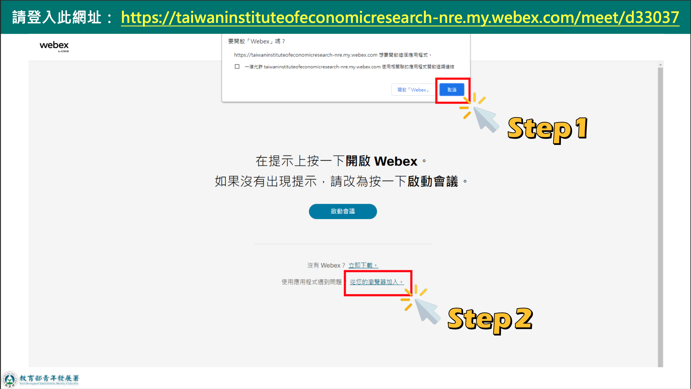
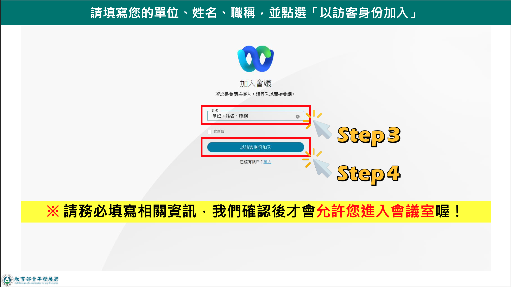
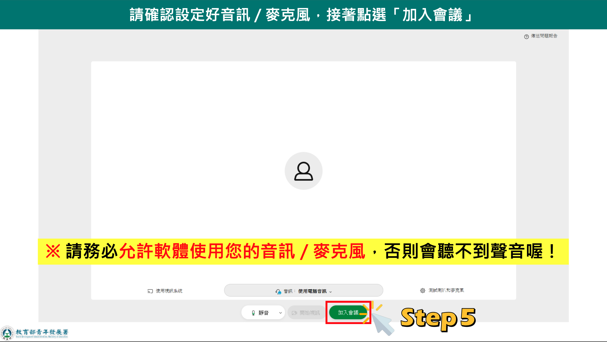
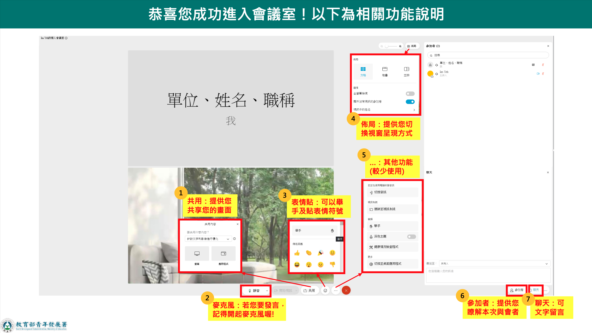
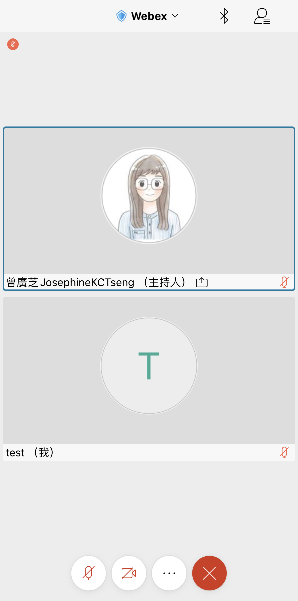
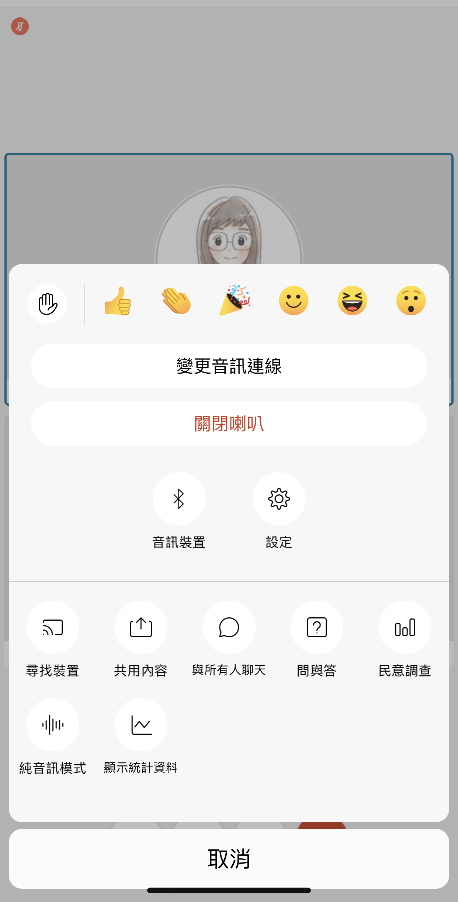

25July
視訊平台使用說明
加入會議室
請透過提供的連結，加入會議室。如果您先前使用過 Cisco Webex，那麼您或許已經下載過軟體，那麼可以點選「啟動會議」與「開啟 Webex」，則可自 Webex Meeting 啟動會議。
當然也可以直接 從瀏覽器開啟加入。請在跳出「要開啟 Webex 嗎」提示時，選擇「取消」並點選畫面下方「從您的瀏覽器加入」。

以訪客身分加入時，請務必填寫 單位、姓名、職稱，如：院青諮-小工，以方便幕僚夥伴識別，允許加入會議室。

在點選「加入會議」前，請記得 允許 Webex 使用音訊/麥克風，如果願意開啟視訊，也須允許取用。您也可以點選畫面右下角的「測試喇叭和麥克風」，確認設備。

經過上述步驟，即可加入會議室。
會議時的功能操作
發言開啟麥克風
畫面下方是功能控制列，可以進行麥克風、視訊等功能的調整，在功能列的最左側是麥克風開關之功能，若要發言請記得開啟麥克風。
線上也可舉手發言
當想發言但怕「搶話」的時候，可以使用舉手功能讓主持人知道接下來您想發言。想使用舉手功能，可點選功能控制列偏右側的笑臉圖示，點開後可以舉手，也可以以表情符號來表達自己的回應。
調整佈局
畫面上方有一個「佈局」可選擇，這個功能主要是讓您調整視窗呈現的方式，比如是否要並排呈現、是否呈現沒有打開視訊的參加者、是否顯示大家的名字等。
更換虛擬背景
若您有打開視訊，但不太想讓大家看見自己所在處所背景，那麼可以用自己找到的背景圖來作為虛擬背景，當然也歡迎使用我們提供的活動虛擬背景。
使用聊天功能
不方便開麥克風說話時，也可使用聊天功能。聊天功能與視窗位於畫面右側，在右下角可點選「聊天」並選擇是要傳送給「所有人」還是特定的參與者。

手機版差異
畫面下方一樣可以調整麥克風、視訊以及離開會議，然而其他的功能會集中在是功能列。詳情請參考下方截圖。


若當天有使用上的問題，請於測試階段或過程中於 Line 群組內提出。
準備好加入工作坊了嗎？我們也很期待喔！如果有需要的話，下面這些訊息或資源可提供參考